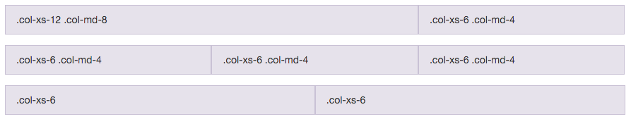
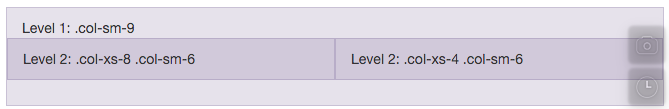

A framework is a standardized set of concepts, practices and criteria for dealing with a common type of problem[...]
[...]package made up of a structure of files and folders of standardized code (HTML, CSS, JS documents etc.)[...]
From awwwards.com
<head>
<style>
.wrapper {
border: solid 1px #666;
padding: 5px 10px;
margin: 40px;
}
@media screen and (max-width: 600px) {
.wrapper {
background: #F9C;
}
}
</style>
</head>
<body>
<div class="wrapper">pink when viewing area < 600px</div>
</body>"Easy to use"
Just use classes to enable styles to your elements:
<button class="btn btn-default">Default</button>Bootstrap is providing a 12 columns grid system.
It also supports nesting rows.
A page contains a container, responsible for the overall width of the block.
containers contain rows, and rows contain columns.
<div class="container">
<div class="row">
<div class="col-lg-3">Menu</div>
<div class="col-lg-9">Content</div>
</div>
</div>See the documentation for more features.
My favourites are tables and buttons.
<link rel="stylesheet"
type="text/css"
href="https://cdnjs.cloudflare.com/ajax/libs/twitter-bootstrap/3.3.6/css/bootstrap.min.css">Remove Andrew's css
<div class="container">
<div class="jumbotron">
<h1>Andrew Cumming</h1>
</div>
</div><table class="table table-striped table-condensed table-bordered table-hover">
<tr>
<th>Office:</th>
<td> Room C49 at the Merchiston campus, ext. 2753.</td>
</tr>
<tr>
<th>Postal:</th>
<td>10 Colinton Rd, EH10 5DT</td>
</tr>
<tr>
<th>Telephone:</th>
<td> (0131) 455 2753</td>
</tr>
<tr>
<th>Email:</th>
<td>
<script>
var en = "n";
document.writeln("a.cummi" + en + "g@napier.ac.uk");
</script>
</td>
</tr>
<tr>
<th>MCSD</th>
<td>Microsoft Certified Solutions Developer</td>
</tr>
</table><h3>Professional</h3>
<div class="row">
<div class="col-md-4">
<h4>Teaching</h4>
<ul>
<li><a href='http://nmyster.co.uk/timetable/'>Neil Stewart</a></li>
<li><a href='http://www.g04t.x10.mx/timetable/index.php'>Luke</a></li>
<li><a href="http://timetableing.napier.ac.uk/reporting/individual;student+set;name;co.cC1f-a%0D%0Aco.cC1f-b%0D%0Aco.cC1f-c%0D%0Aco.cC1f-d%0D%0A?days=1-5&weeks=1-13;16-18&periods=1-9&template=SWSCUST+student+set+individual&height=100&week=100">Year 1 Computing 2006/7</a></li>
<li><a href="http://progzoo.net/">CO12002 Java</a></li>
<li><a href="xml">CO32036 XML</a></li>
<li><a href="tm">Turing Machines</a></li>
<li><a href="access">MS Access tips</a></li>
<li><a href="giip">Internet Programming</a></li>
<li><a href="http://www.dcs.napier.ac.uk/course-notes/sml/manual.html">SML</a> <a href="comp">Proofs</a></li>
<li><a href="http://sqlzoo.net">SQL</a> <a href="http://gentle.org.uk/sql/">SQL</a></li>
</ul>
</div>
<div class="col-md-4">
<h4>Research/KTP/Training</h4>
<ul>
<li><a href="http://www.specknet.org">Specknet</a></li>
<li><a href="#conf">Conferences</a></li>
<li><a href="http://www.nmi.org.uk">NMI</a></li>
<li><a href="http://www.scapatech.com">Scapa</a></li>
<li><a href="http://www.agilent.com">Agilent</a></li>
</ul>
</div>
<div class="col-md-4">
<h4>Other Work</h4>
<ul>
<li><a href='http://www.headfirstlabs.com/PMP/pmp_exam/v1/quiz.html'>PMP Practice Exam</a></li>
<li><a href='http://www.oreilly.com/catalog/sqlhks/'>SQL Hacks</a></li>
<li><a href="http://www.soc.napier.ac.uk/publication/op/peoplepublications/peopleid/19">Publications</a></li>
<li><a href="http://www.bloodaxebooks.com">Bloodaxe</a></li>
<li><a href="http://www.netlex.net">NETLEX</a></li>
<li><a href="http://www.quantumpeople.com">Quantum</a></li>
<li><a href="http://www.prosperity4.com">Prosperity4</a></li>
<li><a href="http://www.ljresearch.co.uk">LJ Research</a></li>
</ul>
</div>
</div>It is responsive by default.
Just choose the columns name carefully.